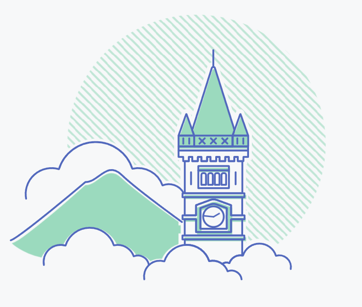
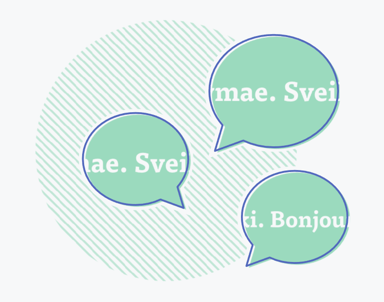
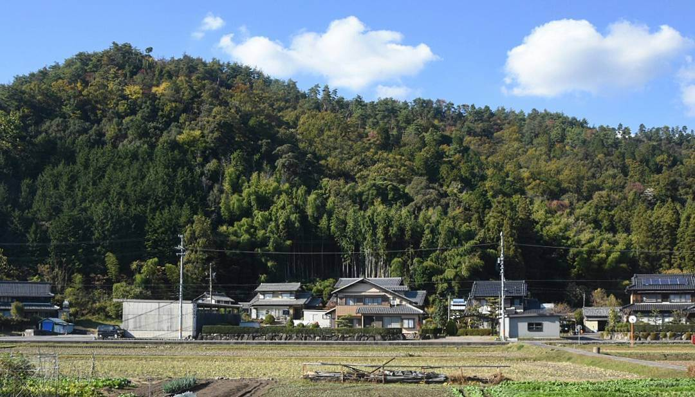
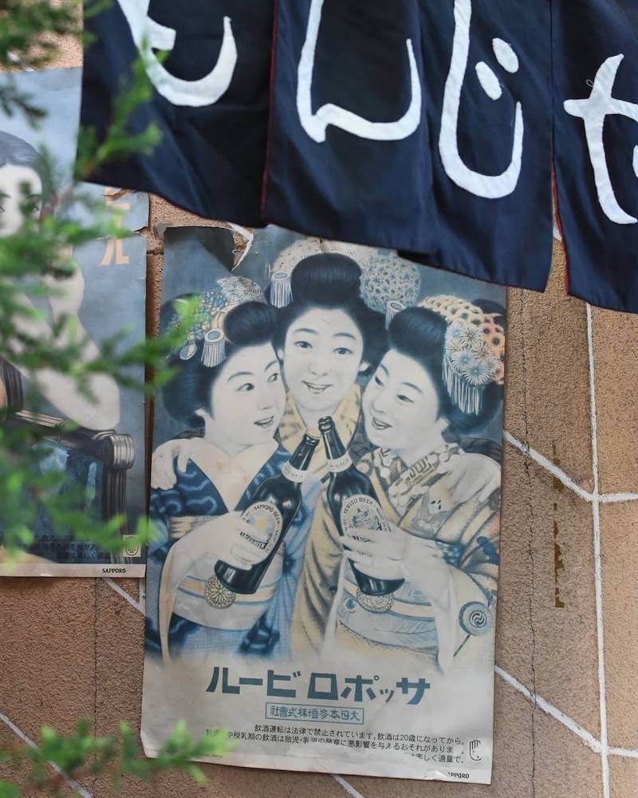
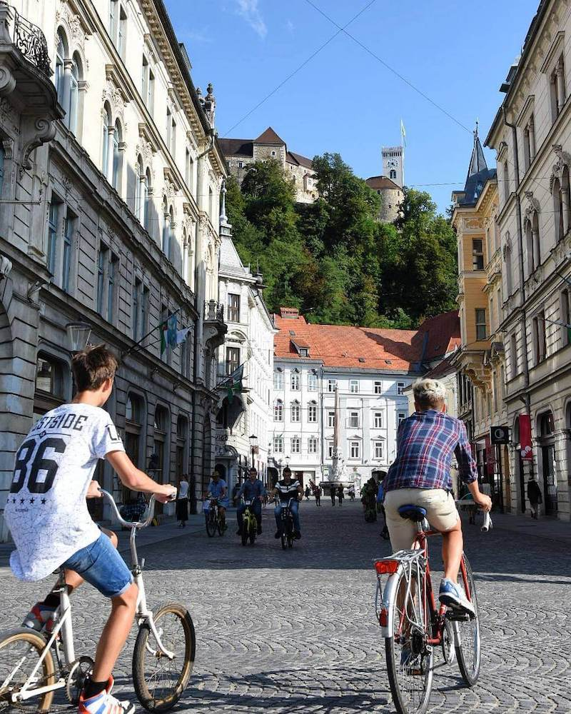

About me .
I'm a developer , designer and linguist who has been building for the web in some capacity since 2001. I specialise in accessibility, performance and usability without sacrificing creativity.
S C R O L LThe valleys of rural Wales aren't quite Silicon Valley, but growing up out here gives you a lot of space to think. When I wasn't out exploring the mountains, I was teaching myself to code. A lot has changed over the years, but I’ve been building for the web since table layouts and under-construction gifs were the Hot New Thing™.
Graduating university with a degree in Japanese and Web Production in 2007, I swapped Pen Y Fan for Mt. Fuji, and moved to Japan where I spent time working in the emerging Tokyo startup scene. After I came back to the UK, I joined one of the South West’s leading digital agencies and worked my way up to lead their frontend development team.
These days, I run my freelance business remotely from the beautiful mountains of Abergavenny , South Wales and can also be found working on-site with clients across Wales , London , Bristol and the South-West .


Serial language-botherer .
Beyond coding, I am an eternal student with a love for a different syntax - I am fascinated by linguistics and the psychology of language acquisition.
These days, I'm equally interested in the overlap of linguistics and technology. Tired of the language-learning world being flooded with chatbots, I am currently exploring ways that tech could be used to improve second-language acquisition and retention without resorting to genAI.
Photography .
Outside of my work I like to spend as much time as I can away from my laptop, travelling and getting out and about with my camera. I shoot on a Fujifilm X-E4 with either a 23mm or 35mm lens, or sometimes just my phone.


